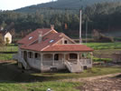

|
VENDO MI
CASA CON VIÑEDOS –
435.000(*)
euros Superficie construida: 574 m2 y finca de 4.057 m2 DE LUJO Y CON ENCANTO (prácticamente nueva) * Sin intermediarios * (*) El precio es por la casa tal como está, sólo le faltan algunos detalles interiores: algún armario empotrado y pintar un par de habitaciones. Yo también me podría encargar de finalizarla. En todo caso lo que falta no excederá de los 3 ó 4.000 euros. En la zona más exclusiva de las Rías Bajas: a pocos kms. del campo de golf de Meis y junto a las mejores playas de Galicia. Con frutales y una plantación reciente de kiwis que, en el futuro, podrán producir unos 6 ó 7.000 kg de kiwis. De todas formas, los ingresos de la producción actual ya cubren todos los costes de mantenimiento de la plantación y limpieza de la propiedad. Si se quisiera producir vino casero, como el famoso albariño o mencía, se podrían arrancar algunas plantas de kiwis y poner cepas de uvas, ya que la estructura de emparrado es la misma. Contactar conmigo para más detalles: |
Pulsar para ver el álbum de fotos  Ubicación: San Salvador de Meis (Lugar de As Barreiras) - Pontevedra |
|
|
|
|
MATERIALES NATURALES
|
|
Palabras de búsqueda con Google.com y Yahoo.com: Se vende casa / chalet. Turismo rural en las Rias Bajas o Rias Baixas, Pontevedra - Galicia España. Club de golf a 10 kms. de Sanjenjo. Las mejores playas en Sanjenjo o Sanxenxo, Cambados, la Toja, Villagarcia de Arosa o el Grove. Turismo, playas, gastronomia y monumentos. Alojamiento de turismo rural, hoteles, apartamentos, poblaciones donde se alquilan habitaciones. Los hoteles mas economicos y tambien los hoteles mas lujosos. Apartamentos y habitaciones de alquiler. Hoteles, hostales, pensiones y habitaciones que se alquilan en Sanjenjo. Turismo y golf, playas y monasterios en las Rias Bajas, Pontevedra - Galicia, España. Gastronomia en los mejores restaurantes con acompañamiento del mejor vino albarino en Sanjenjo. Alquiler de habitaciones, casa de turismo rural, hoteles, pensiones, hostales y apartamentos en Sanxenxo. Senderismo y rutas a caballo. Picadero, club de Golf y las mejores playas cerca de la Lanzada. Alquiler de habitaciones en casas de turismo rural. Apartamentos, pensiones, hostales y hoteles en las Rias Bajas, Pontevedra - Galicia, Espana. Degustaciones gratis en la fiesta del albariño. Alojamiento de turismo rural, hoteles, apartamentos, poblaciones donde se alquilan habitaciones. Los hoteles mas economicos y tambien los hoteles mas lujosos. Apartamentos y habitaciones de alquiler cerca del club de golf.